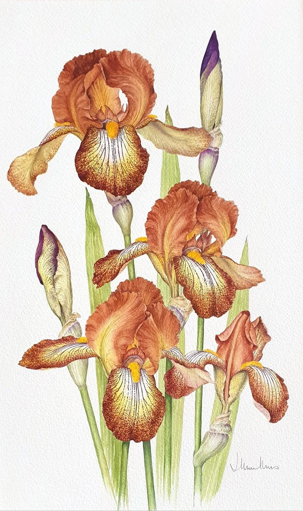

Brown Bearded Iris Study
No. 37- Medium
- Watercolour on paper
- Size
- 47 × 35 cm
- Year
- 1990s
- Price
- £195
Of the many different irises I grew, these brown ones were the most difficult to paint, as the spots of brown seem endless!
Ask about this paintingOr email enquiries@joanmullinsart.co.uk, quoting No. 37. UK only. Collection from Nantwich is free; UK postage is quoted when you enquire.

 Pink Peonies
Pink Peonies